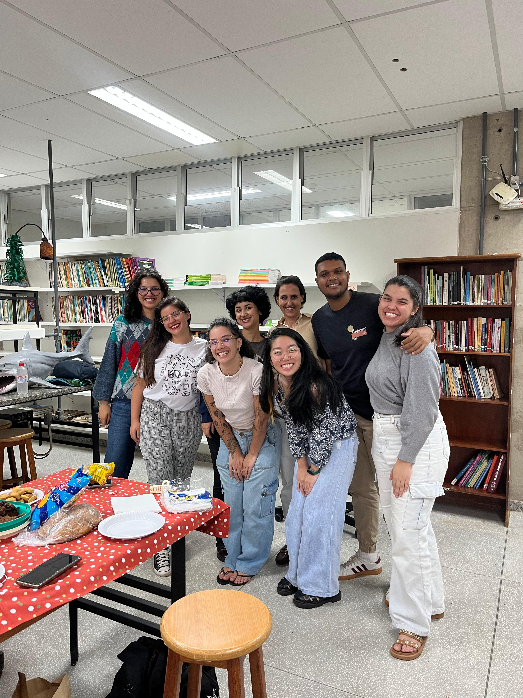

Missão
Promover a excelência na formação docente inicial e continuada, integrando pesquisa, ensino e extensão no contexto das Ciências e Biologia.
Um espaço de integração entre Universidade, Escola e Comunidade, dedicado ao avanço do ensino de Biologia e Ciências Naturais.
O Curso de Licenciatura em Ciências Biológicas da Universidade de Brasília (UnB) tem como diretriz norteadora a formação de alto nível do licenciado em Ciências Biológicas, alicerçada numa sólida fundamentação teórica nas dimensões históricas, filosóficas, psicológicas, políticas e didático-pedagógica, essenciais ao exercício da profissão, articulada à formação decorrente da vivência de atividades práticas.
Considerando as questões apresentadas, foi criado um Laboratório de Ensino de Ciências e Cultura (LECC) dentro do NECBio/IB, visando atender, principalmente, às necessidades dos nossos Licenciandos. Assim o LECC iniciou suas atividades no início de 2011, tendo como principal objetivo dar subsídios para a formação dos licenciandos em Ciências Biológicas, sobretudo no período em que estão cursando as disciplinas específicas da licenciatura.
Atualmente O Laboratório também tem os objetivos de promover atividades que contribuíssem para discussões a respeito do ensino-aprendizagem de Ciências Naturais e Biologia e favorecer a elaboração de projetos inter e multidisciplinares, além de incentivar e promover atividades Culturais.
Por Mariana Zancul

Promover a excelência na formação docente inicial e continuada, integrando pesquisa, ensino e extensão no contexto das Ciências e Biologia.
Ser um polo de referência na Universidade no desenvolvimento de metodologias e materiais didáticos inovadores e acessíveis.
Defesa da educação pública, pensamento crítico, inclusão social, inovação pedagógica e a valorização contínua da cultura.